Menggunakan GPS
Download page as PDFTujuan Pembelajaran:
- Mengetahui bagian-bagian yang ada di GPS
- Memahami cara menyalakan GPS
- Memahami cara menggunakan GPS
- Memahami definisi dari rute perjalanan dan titik objek pada GPS
- Memahami cara menyalakan perekaman rute perjalanan pada GPS
- Memahami cara menyimpan titik pada GPS
- Memahami cara menyalin rute perjalanan dan titik ke laptop
Dalam melakukan survei lapangan, dibutuhkan suatu alat navigasi yang memiliki fungsi sebagai perekam jejak dan titik. Alat yang sering digunakan adalah Global Positioning System atau GPS. Pada bab ini akan dibahas apa itu GPS, bagaimana cara menggunakan GPS, dan bagaimana hasil survei dari GPS ini dapat digunakan untuk membuat peta. Pada modul ini akan dijelaskan bagaimana mengoperasikan Garmin GPSmap 62s/64s, yaitu GPS yang sering digunakan untuk pemetaan. Banyak model GPS lain yang dapat melakukan hal yang sama. Jika Anda menggunakan GPS dengan model yang berbeda, Anda tidak perlu khawatir karena pada prinsipnya akan tetap sama. Jika Anda tidak memiliki GPS, sebagai alternatif dapat menggunakan OSM Tracker yang dapat dipelajari pada modul Menggunakan Aplikasi OSMTracker.
I. Pengertian dan Bagian-bagian GPS
Global Positioning System atau GPS adalah sebuah alat atau sistem berbasis satelit yang dapat digunakan untuk memberikan informasi kepada penggunanya dimana pengguna berada (secara global) di permukaan bumi. Pada dasarnya, cara kerja GPS sama seperti ponsel. Bedanya adalah ponsel menerima sinyal radio dari menara telekomunikasi, sedangkan GPS menerima sinyal dari satelit yang berputar mengelilingi bumi. Dengan menerima sinyal-sinyal dari satelit, sebuah GPS dapat memperhitungkan letak atau lokasi pada permukaan bumi. GPS merekam lokasi ini dalam bentuk koordinat, dimana terdapat dua deret nomor yang panjang. Deret nomor yang pertama menunjukkan posisi Anda dari Timur atau Barat, atau biasa disebut sebagai posisi bujur. Deret nomor yang kedua menunjukkan posisi Anda dari utara atau selatan, atau biasa disebut sebagai posisi lintang. Koordinat bujur dan lintang merupakan koordinat geografis dan setiap tempat di bumi memiliki koordinat geografis yang berbeda-beda.
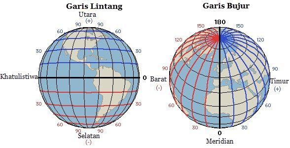
Ilustrasi garis lintang dan garis bujur
Berikut ini adalah bagian-bagian dari GPS Garmin 64s. Jika Anda menggunakan GPS tipe lain tidak perlu khawatir, karena pada dasarnya semua GPS memiliki prinsip yang sama.
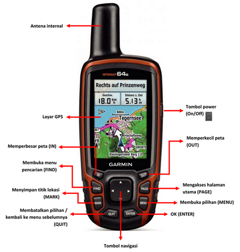
Bagian depan pada GPS
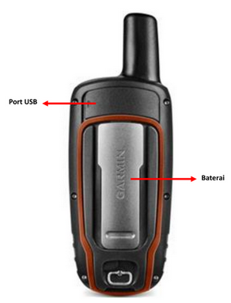
Bagian belakang pada GPS
Berikut ini fungsi dari tombol-tombol yang ada pada GPS:
- Tombol power terletak di sebelah kanan atas. Tekan tombol agak lama, kemudian GPS akan otomatis nyala.
- Tombol (IN) berfungsi untuk memperbesar tampilan peta pada layar GPS.
- Tombol (OUT) berfungsi untuk memperkecil tampilan peta pada layar GPS.
- Tombol (FIND) berfungsi untuk membuka menu pencarian pada GPS.
- Tombol (PAGE) berfungsi untuk mengakses halaman utama dari GPS.
- Tombol (MARK) berfungsi untuk menyimpan titik lokasi pada saat survei menggunakan GPS.
- Tombol (MENU) berfungsi untuk membuka pilihan menu yang ada di GPS.
- Tombol (QUIT) berfungsi untuk membatalkan pilihan atau kembali ke menu sebelumnya.
- Tombol (ENTER) berfungsi untuk memilih atau ok pada suatu menu yang akan Anda pilih.
- Tombol berfungsi untuk menavigasi pada layar peta yang ditampilkan di GPS. Pada bagian belakang GPS sisi atas, terdapat port USB yang berfungsi untuk menyambungkan ke laptop menggunakan kabel USB. Di bagian bawahnya adalah untuk memasang baterai tipe AA.
II. Menyalakan GPS
Global Positioning System atau GPS adalah sebuah alat yang berbasis satelit sehingga untuk menyalakan GPS, pastikan Anda berada di tempat yang terbuka dimana Anda dapat melihat langit dengan jelas. GPS dapat menentukan lokasi Anda dengan cara menerima sinyal dari satelit sehingga jika Anda berada di dalam ruangan, maka GPS tidak akan dapat bekerja. Berikut ini adalah langkah-langkah untuk menyalakan GPS:
- Pada bagian atas sisi kanan GPS Anda, tekan dan tahan tombol Power selama beberapa detik hingga layar menyala dan memunculkan logo “Garmin”. Proses dengan logo Garmin ini memang agak lama, tapi Anda tidak perlu khawatir karena GPS sedang memproses waypoints, tracks, dan routes yang ada di dalam GPS Anda sehingga memerlukan waktu lebih lama.
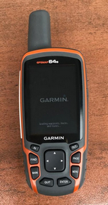
GPS dalam keadaan baru nyala dengan logo Garmin
- Setelah GPS nyala, GPS akan otomatis menunjukkan lokasi dimana Anda berada, seperti gambar di bawah ini.
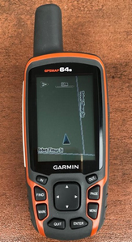
GPS menunjukkan lokasi dimana Anda berada
III. Menggunakan GPS
GPS memiliki banyak fungsi yang bermanfaat bagi kehidupan sehari-hari, seperti untuk menentukan arah perjalanan ataupun untuk mengukur jarak, membuat peta, dan dapat dijadikan sebagai referensi pengukuran suatu wilayah. GPS juga memiliki beberapa pengaturan yang dapat disesuaikan dengan keinginan, salah satunya adalah mengatur tingkat kecerahan dari layar GPS itu sendiri. Untuk mengatur tingkat kecerahan, Anda dapat tekan sekali tombol power di sisi kanan atas GPS, kemudian pada layar GPS akan muncul seperti gambar di bawah ini:
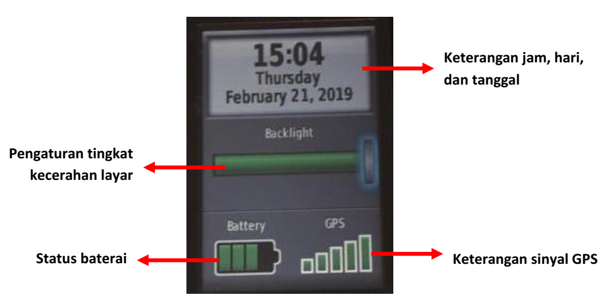
Tampilan layar GPS untuk pengaturan tingkat kecerahan layar
Di layar GPS pada bagian atas dapat dilihat keterangan mengenai hari dan jam Anda menggunakan GPS saat ini. Selanjutnya di bagian bawahnya terdapat pengaturan Backlight atau tingkat kecerahan yang dapat anda atur dengan cara menekan tombol power sekali hingga menemukan tingkat kecerahan yang sesuai dengan keinginan Anda, atau dengan menekan tombol navigasi. Di bagian bawah Backlight, terdapat status baterai GPS Anda dan juga keterangan sinyal GPS Anda. Anda juga dapat melihat berapa banyak satelit yang telah ditangkap oleh GPS Anda dengan cara tekan tombol Page → Satellite. Kemudian layar GPS Anda akan seperti gambar di bawah ini:
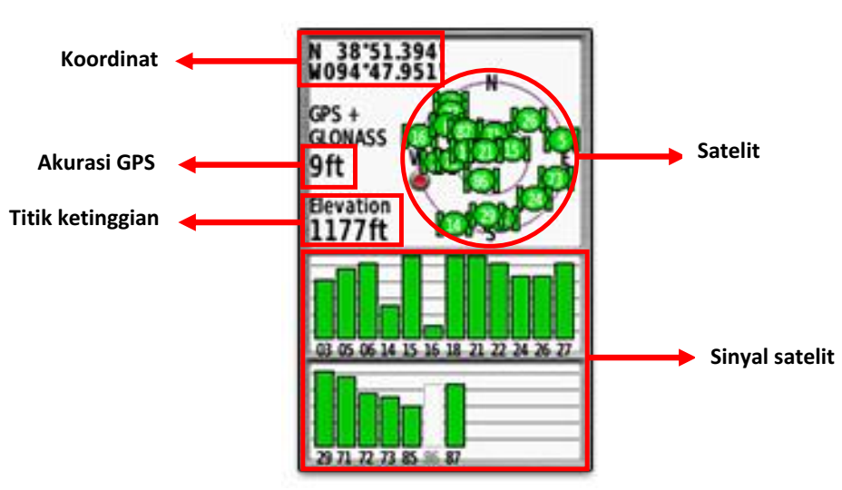
Tampilan layar GPS yang menunjukkan satelit yang sudah ditangkap
Pada layar GPS dapat dilihat bagian Satellite, Anda dapat melihat koordinat dimana Anda berada, akurasi dari GPS, titik ketinggian, jumlah satelit yang sudah ditangkap GPS, dan sinyal satelitnya. Gambar diatas menunjukkan bahwa GPS Anda sedang mencari sinyal satelit. Ketika sudah terhubung dengan tiga satelit atau lebih, GPS akan mendapatkan lokasi Anda.
Di GPS Anda juga dapat mengetahui arah mata angin dari titik lokasi Anda pada pilihan Compass. Anda dapat mencobanya dengan cara menekan tombol Page → Compass. Kompas ini bertujuan untuk menunjukkan arah mata angin pada saat survei.
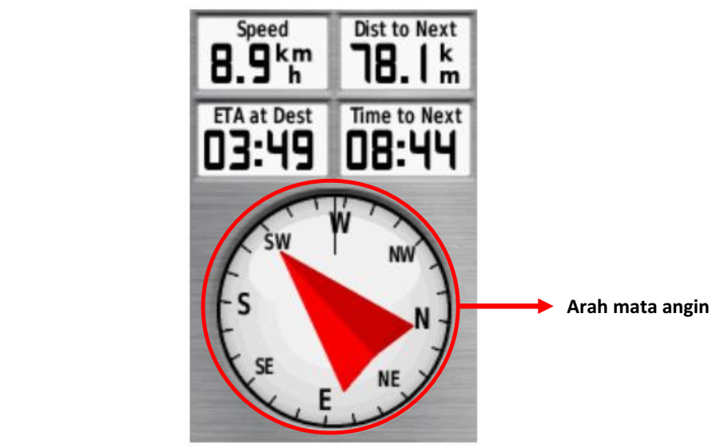
Kompas untuk membantu sebagai penunjuk arah pada saat survei
Pada GPS Anda juga dapat mengetahui lokasi dimana Anda berada dan melihat tempat-tempat di sekitar lokasi Anda. Anda dapat mencobanya dengan cara menekan tombol Page → Map. Pada opsi map ini, Anda juga dapat melihat track dan waypoint jika Anda sudah mulai merekam track dan waypoint.

Tampilan layar GPS pada pilihan menu Map
Tampilan layar GPS Anda mungkin tidak akan seperti gambar di atas karena GPS akan menunjukkan sesuai dengan lokasi Anda saat ini. Jika pada layar GPS Anda lokasinya terlalu besar, maka Anda dapat memperkecil dengan menekan tombol OUT pada GPS beberapa kali hingga tampilan layarnya sesuai dengan yang Anda inginkan. Sebaliknya, jika pada layar GPS Anda lokasinya terlalu kecil, maka anda dapat memperbesarnya dengan menekan tombol IN pada GPS Anda hingga tampilan layarnya sesuai dengan yang Anda inginkan.
Pada GPS Anda terdapat berbagai macam menu utama lainnya pada tombol MENU. Jika Anda menekan tombol MENU, maka akan keluar tampilan pilihan menu seperti gambar di bawah ini.
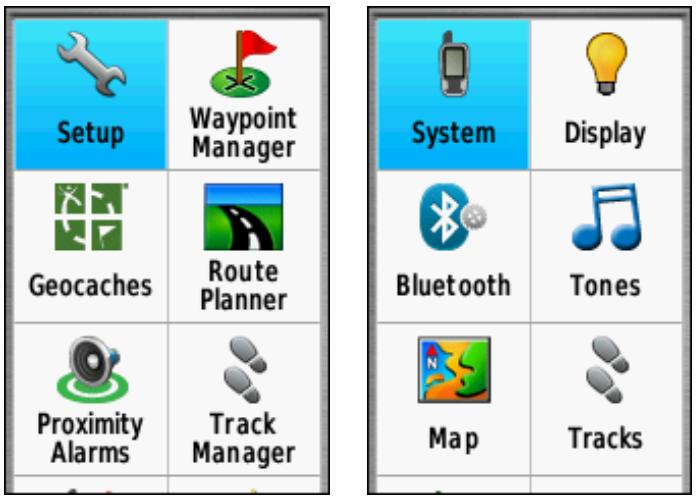
Pilihan menu utama pada tombol MENU
IV. Track dan Waypoint
GPS Anda merekam dua jenis informasi yang berguna untuk membuat peta atau menyimpan koordinat dari sebuah tempat. Pertama, GPS Anda dapat menyimpan jalur yang Anda lewati yang sering disebut dengan track (trek). Kedua, GPS dapat menyimpan lokasi Anda pada memori GPS yang sering disebut dengan titik objek (Waypoint).
a. Pengertian Track atau Rute Perjalanan
Track atau rute perjalanan adalah arah atau jalur perjalanan Anda saat mulai direkam dan akan disimpan berupa seri lokasi kemana pun Anda bergerak. Sebagai contoh, track akan merekam lokasi Anda setiap satu detik, atau setiap satu meter, dan hasilnya akan berupa sebuah seri dari titik-titik yang menunjukan jalur lokasi dimana Anda pernah berada. Track sangat berguna untuk memetakan objek yang ditunjukkan oleh garis atau bentuk, seperti sebuah jalan, atau bentuk dari sebuah lapangan.
b. Pengertian Waypoint atau Titik Objek
Waypoint atau titik objek adalah titik acuan atau kumpulan koordinat yang digunakan untuk keperluan navigasi atau untuk mengidentifikasi sebuah titik di peta. GPS dapat menyimpan lokasi Anda pada memori GPS. Ketika Anda menyimpan sebuah lokasi, koordinat akan disimpan dengan sebuah nama. Sebagai contoh, titik pertama yang tersimpan oleh Anda akan diberi nama 001, kedua 002, dan seterusnya. Untuk lebih jelasnya, akan dibahas pada sub-bab VI. Menyimpan Titik.
V. Menyalakan Mode Perekaman Track atau Rute Perjalanan
Berikut ini adalah langkah-langkah dalam mengaktifkan perekaman track:
- Pergi ke Main Menu, pilih Setup.

Tampilan Main Menu, Setup
- Pilih Tracks.

Tampilan ikon Tracks
- Pada Track Log, ubah menjadi: Record, Show on Map.

Tampilan Track Log
- Pastikan perekaman rute atau track pada GPS Anda dalam keadaan aktif sebelum Anda melakukan survei.
- Jika sudah selesai survei dan ingin menonaktifkan perekam rute atau Track, lakukan cara seperti tadi kemudian pilih Do Not Record.
Track disimpan setelah survei lapangan selesai dilakukan. Umumnya track disimpan perhari. Cara untuk menyimpan Track yang sudah direkam adalah sebagai berikut:
- Pergi ke Main Menu, pilih Track Manager.

Tampilan Main Menu, Track Manager
- Pilih Current Track, yaitu perekaman rute yang baru saja dilakukan.
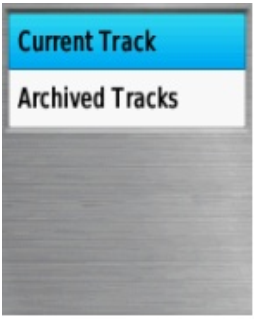
Tampilan Curent Track
- Pilih Save Track, untuk menyimpan rute perjalanan atau track.
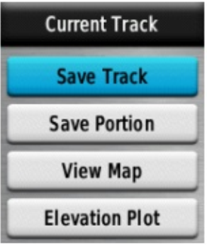
Tampilan Save Track
- Masukkan nama track, umumnya dalam bentuk Tanggal dan waktu survei kemudian pilih Done.
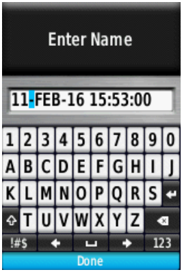
Tampilan Enter Name pada GPS
- Bersihkan perekam track dari perekaman sebelumnya, pilih Yes.
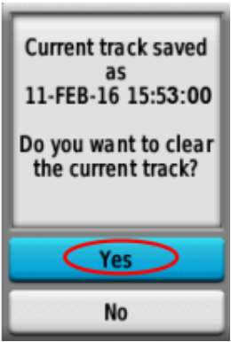
Tampilan menghapus track sebelumnya
- Perhatikan akan muncul nama track yang Anda simpan. Ini membuktikan bahwa track survei Anda sudah berhasil tersimpan.
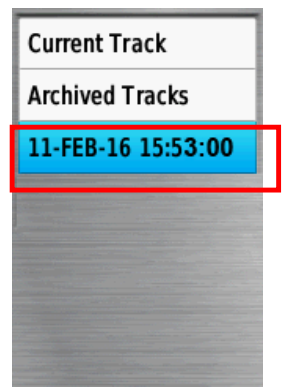
Tampilan track yang telah berhasil disimpan
VI. Menyimpan Titik
Langkah-langkah untuk menyimpan waypoint (titik lokasi) adalah sebagai berikut:
* Tekan tombol Mark pada GPS dan akan muncul tampilan sebagai berikut:
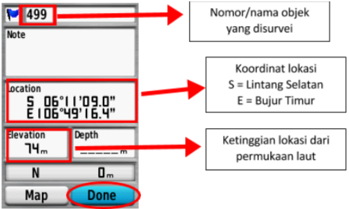
Menyimpan titik pada GPS
- Pilih Done untuk menyimpan Waypoint.
Untuk melihat daftar waypoint yang sudah Anda simpan, silakan Anda pergi ke Main Menu dan pilih Waypoint Manager. Kemudian akan muncul daftar waypoint yang sudah Anda simpan.
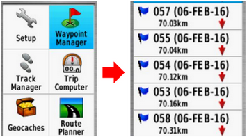
Tampilan daftar waypoint yang tersimpan pada GPS
Untuk menghapus satu Waypoint yang sudah Anda simpan, tekan Enter pada salah satu titik Waypoint yang akan dihapus, kemudian tekan tombol Menu dan pilih Delete.
VII. Menyalin Track dan Waypoint ke Laptop
Selanjutnya data yang sudah dikumpulkan dengan GPS akan di-copy atau salin ke komputer untuk digunakan sebagai acuan pemetaan. Langkah-langkahnya adalah sebagai berikut:
- Sambungkan GPS ke komputer dengan menggunakan kabel data.
- Pastikan GPS dalam keadaan menyala.
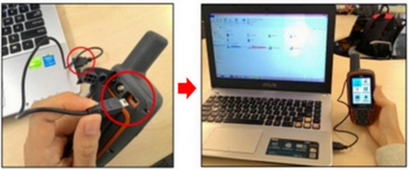
Menyambungkan GPS dengan kabel ke Laptop
- Pergi ke direktori Garmin GPSMAP kemudian pilih folder Garmin → GPX
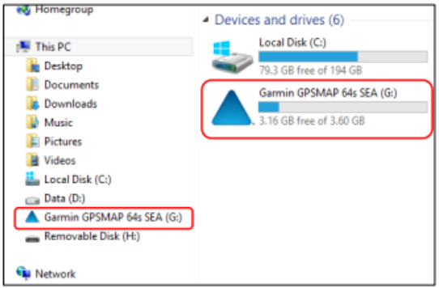
Tampilan pada komputer setelah disambungkan dengan GPS
- Pilih data dengan keterangan tanggal Anda survei (Track & Waypoint) dan salin data tersebut ke komputer Anda.

Tampilan setelah data di GPS dipindahkan ke komputer
RINGKASAN
Selamat! Anda sekarang telah mendapatkan pemahaman bagaimana menggunakan GPS. Jika belum, cobalah untuk melatih menyimpan titik dari beberapa lokasi yang menurut Anda penting. Pada modul ini Anda telah mempelajari bagaimana mengumpulkan waypoint dan track dan membukanya di JOSM. Nantinya, Anda akan menggunakan informasi ini untuk menambahkan objek baru ke OpenStreetMap.